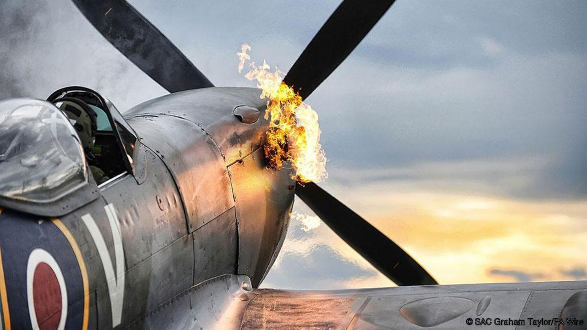

The Supermarine Spitfire is a British single-seat fighter aircraft that was used by the Royal Air Force and other Allied countries around the World War 2 era. Its manufacturer was Supermarine and the designer was R. J. Mitchell. Because of the popularity of the Spitfire there was a numerous amounts of versions that were built. This made it the most produced British aircraft


Engineers at the Supermarine Aviation Works designed the Spitfire with the idea in mind that the plane would be a short-range, high-performance intercptor aircraft. The Spitfire has eliptical wings to give the aircraft a higher top speed than many world war 2 fighters. It had a carburetion design that provided to be fatal against the fuel injection design of the German Bf 109. The Carburetion design flaw was that when the Spitfire was turn upside down the engine would stall. This flaw was fixed later in the war with the fix be a metal disc with a hole that was fitted in the fuel line
